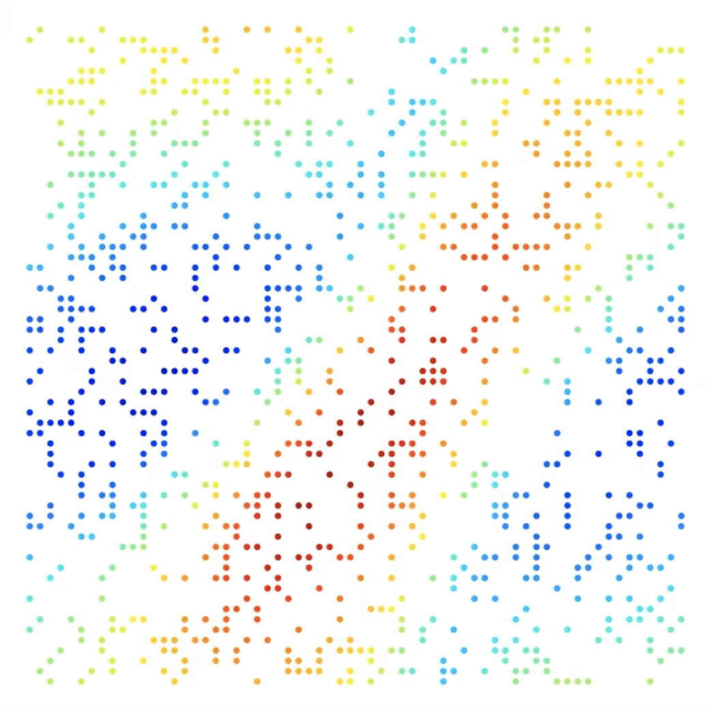

<!DOCTYPE html>
<html lang="en">
<head>
    <meta charset="UTF-8">
    <title>Title</title>
    <link rel="stylesheet" href="../../../css/custom.css">
    <script src="https://d3js.org/d3.v5.min.js"></script>
    <script type="text/javascript"
            src="https://cdnjs.cloudflare.com/ajax/libs/mathjax/2.7.0/MathJax.js?config=TeX-MML-AM_SVG">
        MathJax.Hub.Config({
            tex2jax: {
                inlineMath: [['$', '$'], ['\\(', '\\)']],
                processEscapes: true
            }
        });
    </script>
</head>
<body>
<script>
    var margins = {
        top: 10,
        bottom: 10,
        left: 10,
        right: 10
    }

    var p = {}

    var width = window.innerWidth;
    var height = window.innerHeight;


    var color = d3.scaleOrdinal(d3.schemeCategory10);

    var graph = d3.select("body").append("svg")
        .attr("preserveAspectRatio", "xMinYMin meet")
        .attr("viewBox", [0, 0, width, height])

    xScale = d3.scaleLinear()
        .domain([0, 1])
        .range([margins.left, width - margins.right]);
    yScale = d3.scaleLinear()
        .domain([0, 1])
        .range([margins.top, height - margins.bottom]);

    // assets/initial.png
    img_size = (yScale(1) - yScale(0)) * 0.8
    graph.append("foreignObject")
        .attr("x", xScale(0))
        .attr("y", yScale(0.5) - img_size / 2)
        .attr("width", img_size)
        .attr("height", img_size)
        .append("xhtml:body")
        .html('')
    graph.append("text")
        .attr("x", xScale(0) + img_size / 2)
        .attr("y", yScale(0.5) - img_size / 2)
        .attr("text-anchor", "middle")
        .text("Initial state")
        .attr("font-family", "sans-serif")

    graph.append("foreignObject")
        .attr("x", xScale(0))
        .attr("y", yScale(0.5) + img_size / 2)
        .attr("width", img_size)
        .attr("height", 50)
        .append("xhtml:div")
        .style("text-align", "center")
        .style("font-size", "15px")
        .html("$s_{x, y}[t=0]$");

    // Draw the encoder as a trapzoid vertically
    var polygon_x = xScale(0.2)
    var polygon_y = yScale(0.5)
    var polygon_h = img_size* 0.3
    var reduction = 0.8

    graph.append("polygon")
        .attr("points", (polygon_x) + "," + (polygon_y - img_size/2) + " " +
            (polygon_x + polygon_h ) + "," + (polygon_y - polygon_h * reduction) + " " +
            (polygon_x + polygon_h) + "," + (polygon_y + polygon_h * reduction) + " " +
            (polygon_x) + "," + (polygon_y + img_size/2))
        .attr("stroke", "#277C9D")
        .attr("stroke-width", 3)
        .attr("fill", "white")
        .style("filter", "drop-shadow(5px 5px 4px rgba(0, 0, 0, 0.55))")

    graph.append("line")
        .attr("x1", xScale(0) + img_size-5)
        .attr("y1", yScale(0.5))
        .attr("x2", polygon_x - 1)
        .attr("y2", yScale(0.5))
        .attr("stroke-width", 2)
        .attr("stroke", "black")
        .attr("marker-end", "url(#arrow)")

    graph.append("foreignObject")
        .attr("x", polygon_x)
        .attr("y", yScale(0.4))
        .attr("width", polygon_h)
        .attr("height", '30px')
        .append("xhtml:body")
        .html('$e_\\theta$')
        .style("text-align", "center")
        .style("font-size", "20px")
        .style("font-family", "sans-serif")
        .style("text-anchor", "middle")
        .style("text-dominant-baseline", "middle")
        .style("color", "#277C9D")

    var start_x = xScale(0.3)
    var start_y = yScale(0.75)
    var stop_x = xScale(0.8)
    graph.append("rect")
        .attr("x", start_x)
        .attr("y", start_y)
        .attr("width", (stop_x - start_x))
        .attr("height", (yScale(1) - start_y))
        .attr("rx", '10px')
        .attr("fill", "white")
        .attr("stroke", "#598938")
        .attr("stroke-width", 3)
        .style("filter", "drop-shadow(5px 5px 4px rgba(0, 0, 0, 0.55))")

    graph.append("path")
        .attr("d", "M " + (polygon_x + polygon_h) + " " + (polygon_y) + " " +
            "L " + ((polygon_x + polygon_h) + (start_x - polygon_x - polygon_h)/2) + " " + (polygon_y) + " " +
            "L " + ((polygon_x + polygon_h) + (start_x - polygon_x - polygon_h)/2) + " " + (start_y + (yScale(1) - start_y)/2) + " " +
            "L " + (start_x-1) + " " + ((start_y + (yScale(1) - start_y)/2)) + " " )
        .attr("fill", "none")
        .attr("stroke", "black")
        .attr("stroke-width", 2)
        .attr("marker-end", "url(#arrow)")

    graph.append("foreignObject")
        .attr("x", ((polygon_x + polygon_h) + (start_x - polygon_x - polygon_h)/2)-50)
        .attr("y", polygon_y-30)
        .attr("width", 100)
        .attr("height", 100)
        .append("xhtml:body")
        .html("$\\alpha(0)$")
        .style("text-align", "center")
        .style("font-size", "15px")
        .style("font-family", "sans-serif")
        .style("color", "#598938")

    graph.append("foreignObject")
        .attr("x", start_x)
        .attr("y", start_y)
        .attr("width", (stop_x - start_x))
        .attr("height", (yScale(1) - start_y))
        .append("xhtml:body")
        .html("$\\dot{\\alpha}(t) =  \\color{#598938}{f_\\theta}\\big(\\alpha(t)\\big)\\quad +\\quad $ Neural-ODE")
        .style("text-align", "center")
        .style("font-size", "20px")
        .style("font-family", "sans-serif")

    var mlp_blocks = []
    var n_layers = 8
    var mlp_start_x = start_x + xScale(0.1)
    var mlp_start_y = yScale(0.1)
    var mlp_height = yScale(0.5)
    var mlp_width = xScale(0.01)

    var mlp_block_width = (stop_x - mlp_start_x) / (n_layers)

    for (var i=0; i<n_layers; i++) {
        var length_loss = (i / n_layers) * mlp_height * 0.8
        r = graph.append("rect")
            .attr("x", mlp_start_x + i * mlp_block_width + mlp_block_width / 2 - mlp_width / 2)
            .attr("y", mlp_start_y + length_loss / 2)
            .attr("width", mlp_width)
            .attr("height", mlp_height - length_loss)
            .attr("rx", '5px')
            .attr("fill", "#d92124")
            .attr("stroke", "none")
            .attr("stroke-width", 0)
            .attr("opacity", d3.randomUniform(0.25, 1)())
        mlp_blocks.push(r)

        // Add arrows
        graph.append("line")
            .attr("x1", mlp_start_x + (i - 1) * mlp_block_width + mlp_block_width / 2 + mlp_width / 2)
            .attr("y1", mlp_start_y + length_loss / 2 + (mlp_height - length_loss) / 2)
            .attr("x2", mlp_start_x + i * mlp_block_width + mlp_block_width / 2 - mlp_width / 2 - 1)
            .attr("y2", mlp_start_y + length_loss / 2 + (mlp_height - length_loss) / 2)
            .attr("stroke", "black")
            .attr("stroke-width", 2)
            .attr("marker-end", "url(#arrow)")

        var current_x = mlp_start_x + i * mlp_block_width + mlp_block_width / 2
        var current_y = mlp_start_y + length_loss / 2 + (mlp_height - length_loss)

        graph.append("path")
            .attr("d", "M " + ((stop_x - start_x)/2 + start_x) + " " + (start_y) + " " +
                "L " + ((stop_x - start_x)/2 + start_x) + " " + (start_y -10) + " " +
                "L " + (current_x) + " " + (start_y -10) + " " +
                "L " + (current_x) + " " + (current_y) + " " )
            .attr("fill", "none")
            .attr("stroke", "#598938")
            .attr("stroke-width", 2)
    }

    // Add arrows

    var defs = graph.append("defs");
    defs.append("marker")
        .attr("id", "arrow")
        .attr("markerWidth", 10)
        .attr("markerHeight", 10)
        .attr("refX", 5)
        .attr("refY", 3)
        .attr("orient", "auto")
        .attr("markerUnits", "strokeWidth")
        .append("path")
        .attr("d", "M0,0 L0,6 L6,3 z")


    graph.append("line")
        .attr("x1", mlp_start_x)
        .attr("y1", mlp_start_y - 10)
        .attr("x2", mlp_start_x + mlp_block_width * mlp_blocks.length)
        .attr("y2", mlp_start_y -10)
        .attr("stroke", "black")
        .attr("stroke-width", 2)
    graph.append("line")
        .attr("x1", mlp_start_x)
        .attr("y1", mlp_start_y - 10)
        .attr("x2", mlp_start_x)
        .attr("y2", mlp_start_y )
        .attr("stroke", "black")
        .attr("stroke-width", 2)

    graph.append("line")
        .attr("x1", mlp_start_x + mlp_block_width * mlp_blocks.length)
        .attr("y1", mlp_start_y - 10)
        .attr("x2", mlp_start_x + mlp_block_width * mlp_blocks.length)
        .attr("y2", mlp_start_y )
        .attr("stroke", "black")
        .attr("stroke-width", 2)

    graph.append("text")
        .attr("x", mlp_start_x + mlp_block_width * mlp_blocks.length/2)
        .attr("y", yScale(0))
        .attr("text-anchor", "middle")
        .text("Multiplicative Filter Network")
        .attr("font-family", "sans-serif")
        .attr("font-size", "15px")
        .attr("dominant-baseline", "middle")

    graph.append("rect")
        .attr("x", start_x)
        .attr("y", mlp_start_y + (mlp_height * 0.1)/2)
        .attr("width", mlp_height*0.9)
        .attr("height", mlp_height*0.9)
        .attr("fill", "white")
        .attr("stroke", "black")
        .attr("stroke-width", 2)

    graph.append("text")
        .attr("x", start_x + mlp_height*0.9/2)
        .attr("y", mlp_start_y)
        .attr("dy", '-0.5em')
        .attr("text-anchor", "middle")
        .text("Query position")
        .attr("font-family", "sans-serif")
        .attr("font-size", "15px")
        .attr("dominant-baseline", "middle")

    graph.append("rect")
        .attr("x", start_x + 50)
        .attr("y", mlp_start_y + (mlp_height * 0.1)/2 + 25)
        .attr("width", mlp_height*0.1)
        .attr("height", mlp_height*0.1)
        .attr("fill", "black")
        .attr("stroke-width", 0)

    graph.append("text")
        .attr("x", start_x + 50 + mlp_height*0.1/2)
        .attr("y", mlp_start_y + (mlp_height * 0.1)/2 + 45)
        .attr("text-anchor", "middle")
        .text("(x, y)")
        .attr("font-family", "sans-serif")
        .attr("font-size", "15px")
        .attr("dominant-baseline", "middle")
        .attr("fill", "black")

    //assets/dino.mp4
    graph.append("foreignObject")
        .attr("x", xScale(0.8) + 20)
        .attr("y", yScale(0.5) - img_size / 2)
        .attr("width", img_size)
        .attr("height", img_size)
        .append("xhtml:body")
        .html("<video data-autoplay src='assets/dino.mp4' autoplay='true' loop='true' muted='true' width='100%'></video>")

    var x1 = (current_x + mlp_width/2)
    var y1 = mlp_start_y + mlp_height/2
    var x2 = xScale(0.8) + 25
    var y2 = yScale(0.5)
    graph.append("path")
        .attr("d", "M " + x1 + ' ' + y1 + " " +
            "L " + (x1 + (x2 - x1)/2) + " " + y1 + " " +
            "L " + (x1 + (x2 - x1)/2) + " " + y2 + " " +
            "L " + x2 + " " + y2 + " " )
        .attr("fill", "none")
        .attr("stroke", "black")
        .attr("stroke-width", 2)
        .attr("marker-end", "url(#arrow)")

    graph.append("text")
        .attr("x", xScale(0.8) + 20 + img_size/2)
        .attr("y", yScale(0) + 10)
        .attr("text-anchor", "middle")
        .text("Continuous sim.")
        .attr("font-family", "sans-serif")
        .attr("font-size", "15px")
        .attr("dominant-baseline", "middle")

    graph.append("foreignObject")
        .attr("x", xScale(0.8) + 20)
        .attr("y", yScale(0.5) + img_size / 2)
        .attr("width", img_size)
        .attr("height", 50)
        .append("xhtml:div")
        .style("text-align", "center")
        .style("font-size", "15px")
        .html("$s(x, y, t)$");


    function intervals(){
        for (var i=0; i<mlp_blocks.length; i++){
            mlp_blocks[i].transition().attr("opacity", d3.randomUniform(0.10, 1)())
        }
    }

    var interval = setInterval(intervals, 100)

</script>
</body>
</html>